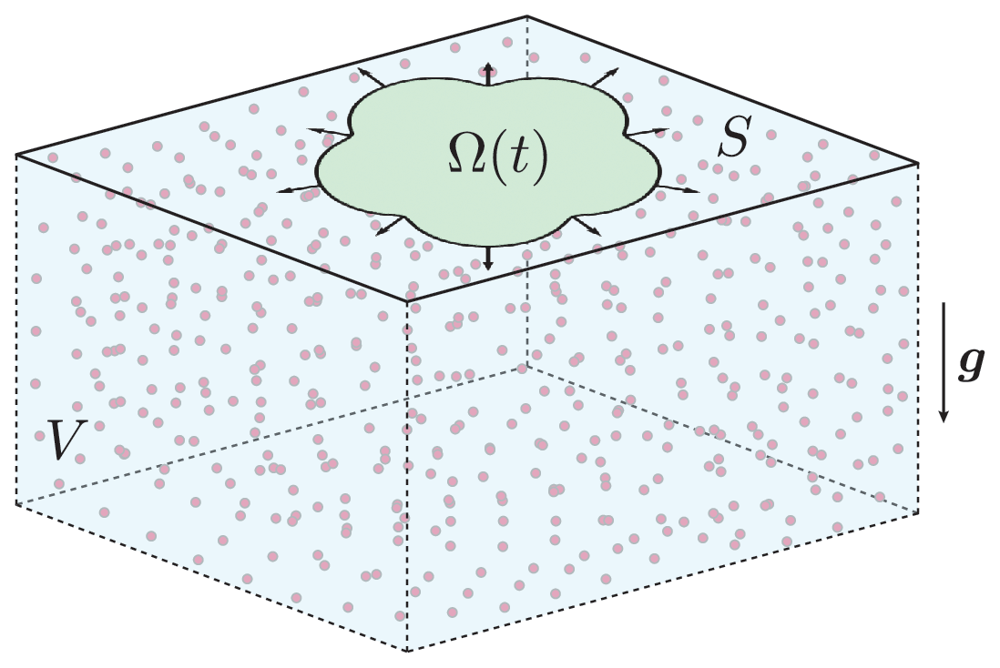
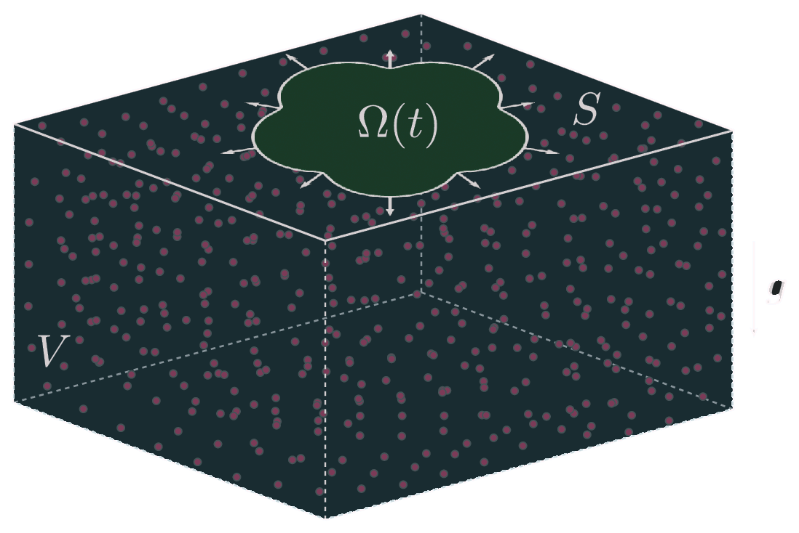

Instability of microbial droplets growing on viscous substrates
J. Fluid Mech. (2026) · arXiv:2602.13724 · Code and data on GitHub
Yeast colonies grown on the surface of a viscous fluid start as round, flat "droplets". On less viscous substrates their edges become rough and grow thin fingers. Two mechanisms are at play. Growth pushes on the fluid surface, which spreads the colony outward. Nutrient consumption lightens the fluid beneath the droplet, which drives a buoyant vortex ring in the bulk. This work develops a model that couples both effects and reduces it to a set of integro-differential equations posed on the droplet alone. From these equations it finds an exact, radially expanding solution and determines when that solution becomes unstable.
This page was generated using Claude Opus 5.5 (Anthropic).
Main results
- A model on the droplet alone. At small Reynolds and Péclet numbers the bulk is governed by linear equations, and the full three-dimensional problem reduces to a system of integral equations on the droplet. The system involves four operators: the single-layer potential, the hypersingular operator, and the volume potentials of the 2D Laplacian and bilaplacian.
- An exact expanding disk. For every metabolic Rayleigh number $Ra$ the circular droplet grows as $R(t) = R_0e^{t/2}$. Its pressure is the sum of a growth part, which is positive, and a buoyancy part, which is negative. Buoyancy creates a vortex ring under the droplet and a peak in the surface velocity at $r \approx 1.1R$. Both features are seen in experiments.
- Growth stabilizes. With growth alone, every non-trivial mode decays, at a rate that grows like $m^{1/2}$ with the wavenumber $m$. On a rigid substrate the rate grows like $m$, so the viscous substrate damps short waves less strongly.
- Buoyancy destabilizes. Buoyant flows amplify every mode $m \ge 3$. The disk is unstable to mode $m$ once $\beta Ra$ exceeds a threshold $\beta Ra_*^m$. This threshold decreases with $m$ towards $96$, the value at which the pressure becomes negative everywhere in the droplet. At the viscosity where instability first appears in experiments, the estimate is $\beta Ra \approx 65$, the same order of magnitude.
The model sets out the equations and the dimensionless groups. Integral formulation reduces them to the droplet. Axisymmetric solutions and Linear stability present the results, with interactive versions of the figures from the paper.
The model¶
Fluid, nutrient and growth¶
The droplet $\Omega(t)$ is a flat domain on the surface $S = \{z = 0\}$ of a Newtonian fluid that fills $V = \{z < 0\}$ (Fig. 1). The fluid has viscosity $\mu$, and its density $\rho = \rho_0(1 + \alpha c)$ increases with the nutrient concentration $c$. In the Boussinesq approximation the velocity $\mathbf{U}$, pressure $P$ and concentration satisfy
On the droplet the cells grow at an areal rate $\gamma(c)$, so the surface velocity $\mathbf{u}$ satisfies $\nabla_{2D}\cdot\mathbf{u} = \gamma(c)$. The growth pressure $p$ is balanced by the viscous traction $\mathbf{f}$ of the fluid. The surface stays flat, and the cells do not slip on the fluid:
where $T$ takes the tangential part of a vector on the surface. Off the droplet the surface is traction-free, with no nutrient flux, and $c \to c_\infty$ far away. On the droplet, conservation of mass between cells and nutrient gives the flux condition $D\,\partial_z c = -\rho_b\,\gamma(c)$, with $\rho_b$ the areal cell density. The boundary moves with the normal surface velocity, $\partial_t\boldsymbol{\Gamma} = (\mathbf{u}\cdot\hat{\mathbf{n}})\hat{\mathbf{n}}$. Line tension is neglected, which the paper estimates is reasonable for wavenumbers up to $m \ll 30$–$300$. The analysis below takes the nutrient-rich case $\gamma = 1$.
Dimensionless groups¶
Lengths are scaled by the initial radius $\ell_c$, time by the growth time $t_c = 1/\gamma_\infty$, pressure by $\mu/t_c$ and concentration by $c_\infty$. Four dimensionless groups appear:
$Ra$ is the metabolic Rayleigh number. It compares buoyancy forces to growth forces and is inversely proportional to the viscosity. $\beta$ measures how strongly the droplet depletes the nutrient. For the experiments of Atis et al. (2019), with $\ell_c \approx 2.5$ mm, $t_c \approx 1$ day, $\mu \approx 450$ Pa s and $D \approx 2.4\times10^{-4}$ mm²/s, $Re \approx 1.6\times10^{-10}$ and $Pe \approx 0.3$. With $\alpha c_\infty \approx 0.01$ and a nutrient depletion length of about 2 mm, $Ra \approx 50$ and $\beta \approx 1.3$. With $Re, Pe \ll 1$ the bulk reduces to forced Stokes flow and a harmonic concentration,
with flux condition $\partial_z c = -\beta\gamma(c)$ on $\Omega$. All of the nonlinearity and time dependence now comes from the moving domain.
Integral formulation¶
The reduced bulk equations are linear, so they can be solved by a Fourier transform in the plane of the surface. At $z = 0$ this gives a balance between the surface velocity, the growth pressure and the surface concentration:
The concentration is written as a single-layer potential with an unknown density $\sigma$ on the droplet, $c(\mathbf{X}) = 1 - \frac{1}{4\pi}\int_\Omega \sigma(\mathbf{y})\,|\mathbf{X} - \mathbf{y}|^{-1}\,\mathrm{d}\mathbf{y}$. This form is harmonic, has no flux off the droplet, and tends to 1 far away.
Equations on the droplet¶
Inverting the transform gives a closed system for the velocity $\mathbf{u}$, pressure $p$ and density $\sigma$, posed only on $\Omega$:
with the single-layer potential of the 3D Laplacian and the volume potential of the 2D bilaplacian,
The constant $\kappa$ is set by the far field and acts as an effective depth (see below). The main analysis takes $\kappa = 0$, which corresponds to a depth of about one droplet radius. Taking the divergence of the first equation eliminates $\mathbf{u}$ and leaves
where $\mathcal{N}_\Omega = \Delta\mathcal{S}_\Omega$ is the hypersingular operator, with kernel $|\mathbf{x}-\mathbf{y}|^{-3}/4\pi$ taken as a Hadamard finite part, and $\mathcal{V}_{\Omega,\kappa} = \Delta\mathcal{B}_{\Omega,\kappa}$ is the logarithmic volume potential. The density can be found first, then the pressure, then the velocity. On a rigid substrate the analogous model is $\mathbf{u} = -\nabla p$. On a fluid, the pressure instead acts on the droplet nonlocally through $\mathcal{S}_\Omega$.
Operators on the disk¶
On the unit disk $D$ the operators are diagonalized by the projected spherical harmonics $y_\ell^m(\mathbf{x}) \propto P_\ell^{|m|}\big(\sqrt{1-r^2}\big)e^{im\theta}$. With the weight $\omega = \sqrt{1 - r^2}$,
with generalized eigenvalues
These relations, together with closed forms for $\mathcal{V}_D$ and $\mathcal{B}_D$ applied to $\zeta^m$, give every solution below exactly.
Axisymmetric solutions¶
Growth and buoyancy¶
Because the equations are linear, the pure-growth problem ($Ra = 0$) and the buoyancy-dominated limit ($Ra \to \infty$) can be solved separately and then added. On a disk of radius $R$ with $\gamma = 1$, the density is $\sigma = 2\beta$ and
with $\lambda_1^0 = 4/\pi$ and $\omega = \sqrt{1 - |\mathbf{x}|^2}$. The growth pressure is positive and the buoyancy pressure is negative. The velocity on the droplet is $\mathbf{u} = \mathbf{x}/2$ for every $Ra$, so the droplet stays a disk and grows as $R(t) = R_0e^{t/2}$. The buoyancy part of the velocity vanishes on the droplet: buoyancy moves the surrounding fluid but not the disk itself.
Surface flow¶
Bulk flow¶
The flow in the bulk is the same superposition, $\mathbf{U} = \mathbf{U}_g + \beta Ra\,\mathbf{U}_b$. Growth alone gives a stagnation-point flow: fluid is drawn up from below and pushed out along the surface. Buoyancy alone gives a vortex ring whose core sits near the droplet edge, with a lower stagnation point on the axis near $z \approx -1$; the constant $\kappa$ sets the position of this point. The nutrient is depleted near the droplet and recovers along nested, roughly ellipsoidal contours that become circular far away.
Linear stability¶
Perturbed disks¶
Perturb the edge of the expanding disk with wavenumber $m$ and small relative amplitude $\varepsilon(t)$:
This is the image of the unit circle under the conformal map $f_\varepsilon(\zeta) = R(\zeta + \varepsilon\zeta^{m+1})$. Pulling the integral operators back to the unit disk through $f_\varepsilon$ keeps the form of their singular kernels. Their shape derivatives can then be evaluated exactly with the eigenfunction identities above. The normal velocity of the perturbed edge is
Growth and buoyancy modes¶
The two stability coefficients are
where $\lambda_m^m = \Gamma(m + \frac12)\,\Gamma(\frac12)/\Gamma(m+1)$ and $\lambda_1^0 = 4/\pi$.
For growth, $\sigma_g^0 = 1/2$ is the dilation of the disk and $\sigma_g^1 = 0$ is a translation. Every other mode has $\sigma_g^m < 0$, and $\sigma_g^m \sim -m^{1/2}$ for large $m$. On a rigid substrate, where $\mathbf{u} = -\nabla p$, the same calculation gives $\sigma^m_{g,\mathrm{rigid}} = -(m-1)/2$, which is linear in $m$. For buoyancy, $\sigma_b^0 = \sigma_b^1 = 0$ by scale and translation invariance, and $\sigma_b^2 < 0$. Every mode $m \ge 3$ has $\sigma_b^m > 0$, also growing like $m^{1/2}$.
Stability criterion¶
Adding a tangential velocity, which does not change the shape, makes the perturbation ansatz consistent at $O(\varepsilon)$. This gives $\dot R = R/2$ and
with $R(0) = 1$. At short times, mode $m \ge 3$ grows when
which decreases with $m$ from $146$ at $m = 3$ towards $96$ as $m \to \infty$. This limit is exactly the value at which the axisymmetric pressure becomes negative everywhere in the droplet. Physically, a negative pressure acts to compress the droplet, which the growth constraint forbids. The factor $e^t$ in the growth rate is $R(t)^2$: as the droplet grows, the effective Rayleigh number $\beta Ra\,R^2$ grows with it.
Effect of depth¶
The constant $\kappa$ matches the semi-infinite inner solution to a finite fluid depth. It is chosen so that the vertical velocity on the axis vanishes at a depth $|H|$, measured in droplet radii. For large depths, $\kappa \sim 1 - \log 2|H|$, and $\kappa = 0$ corresponds to $|H| \approx 1$. A nonzero $\kappa$ adds a multiple of the growth pressure, and the short-wave threshold becomes
Deeper fluid (more negative $\kappa$) lowers the threshold. If $\kappa > 1/6$, every mode is stable.
Numerical validation¶
The $O(1)$ and $O(\varepsilon)$ problems are also solved numerically by expanding in projected spherical harmonics up to degree $M$. Gauss–Legendre quadrature in $s = \sqrt{1 - r^2}$ and the trapezoidal rule in $\theta$ compute the coefficients. $\mathcal{S}_D$ and $\mathcal{N}_D$ are then applied, or inverted, through their eigenvalues. $\mathcal{V}_D$ uses singularity subtraction, and $\mathcal{B}_D$ uses the smooth rule directly. The growth coefficients are exact to rounding error, because the solution lies in the basis. The buoyancy coefficients converge like $M^{-4}$ and reach about eight digits at $M = 128$.
| $m$ | $\sigma_g^m$ exact | numerical, $M = 32$ | $\sigma_b^m$ exact | numerical, $M = 32$ |
|---|---|---|---|---|
| 2 | −0.25 | −0.250000000000004 | −0.0015625 | −0.0015602 |
| 3 | −0.4375 | −0.437500000000005 | 0.0064174 | 0.0064206 |
| 4 | −0.59375 | −0.593750000000004 | 0.0096571 | 0.0096611 |
| 5 | −0.73047 | −0.730468750000010 | 0.0117520 | 0.0117570 |
| 8 | −1.07104 | −1.071044921875002 | 0.0159711 | 0.0159773 |
Citing¶
If you found this work useful in your research, please cite the paper:
V. Gomez Herrera and S. Weady, Instability of microbial droplets growing on viscous substrates, Journal of Fluid Mechanics (2026). doi:10.1017/jfm.2026.11721 · arXiv:2602.13724
@article{gomezherrera2026instability,
title = {Instability of microbial droplets growing on viscous substrates},
author = {Gomez Herrera, Vicente and Weady, Scott},
journal = {Journal of Fluid Mechanics},
year = {2026},
doi = {10.1017/jfm.2026.11721},
eprint = {2602.13724},
archivePrefix = {arXiv}
}The experiments that motivate this work are described in S. Atis, B. T. Weinstein, A. W. Murray and D. R. Nelson, Microbial range expansions on liquid substrates, Physical Review X 9, 021058 (2019).